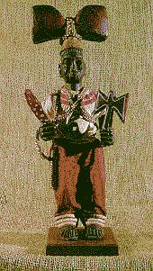

A HOUSE DIVIDED BY CLASH OF THE GODS
Cuban Santeria priests bump heads over politics on year's predictions
January 9, 1997, in the Miami Herald
By JUAN O. TAMAYO
Herald Staff Writer
The high priests of Afro-Cuban religions have issued their prognostications
for the year 1997. Not surprisingly, they are deeply divided along
Cuba’s political fault line.
In Havana, pro-Castro high priests known as babalawos say their
gods predicted a good year, with social peace and bounteous harvests.
But less revolutionary brethren in Havana forecast hunger and
job problems in 1997.
In Miami, anti-Castro babalawos say their Gods spoke of civil
war and the death of President Fidel Castro. Those cheery Havana
predictions, they sneer, are dirty manipulations by Castro’s secret
police.
``There’s little ethics and too much politics in this,’’ moaned
Jose Montoya, a Miami babalawo who said he has been called a ``Castro
agent’’ because he accepts the predictions of a Havana group recognized
by Castro’s government.
 The gap between predictions
might seem absurd, were it not for the fact that many Cubans give
serious weight to the forecasts divined by babalawos from seashells
and other sacred objects during secret rituals each Dec. 31. Cuban
police briefly detained one babalawo last January after one forecast
predicted a wave of government repression in 1996. And academic
experts on Afro-Cuban religions say they don’t doubt that Havana
security agents manipulate the annual predictions for political
gain.
Then there are those predictions that come eerily close to reality:
Forecasts of security crackdowns and hurricanes in 1996 came true,
with a harsh wave of arrests of Concilio Cubano dissidents in
February and Hurricane Lili’s destructive rampage through central
Cuba in October.
The 1994 predictions that many Cubans would ``take baths in
the ocean’’ and ``remain unburied’’ coincided with the rafter
crisis that saw some 36,000 Cubans flee the island aboard homemade
rafts and boats, and an undetermined number drown.
``There are lies and politics, but the real predictions are
gods speaking,’’ said Rigoberto Zamora, head of the Miami-based
International Federation of Afro-Cuban Yoruba Religion, who faced
four charges of cruelty to animals over a televised sacrifice
in 1995.
`Worst year ever’
A 59-year-old Cuban army veteran who fought against Castro in
the late 1950s and now leads the Association of Veterans of the
Anti-Communist War of Cuba, Zamora said the gods consulted by
his federation’s eight babalawos predicted ``the worst year ever’’
for Cuba in 1997.
``On Cuba, the predictions speak of a civil war, of a revolution
within the revolution,’’ he said. A separate ritual in early December
to divine Castro’s future had this result: ``It’s his time to
die.’’
To get protection from evil, believers should place ``a white
flag with a painted elephant’’ over the doors to their homes,
Zamora’s group reported in an English-language fax sent to reporters.
The prediction, also known as the Oddun or Letter, also forecast
violent weather and an increase in street crime. Some predictions
apply to both Cuba and Miami, Zamora said.
The Odduns often contain vague phrases and anecdotes or parables.
``ICA Ogunda Ano Osobo, governing INLE and OSAIN,’’ was part of
the Zamora group’s Oddun for 1997. Babalawos interpret the text,
based on their own knowledge and sacred texts.
A different group
A different forecast by a group of Havana babalawos regarded
by academic experts as free of government influence predicted
1997 would see hunger and problems with work everything from unemployment
to job accidents and repression for written works.
But they predicted a relatively good year for Cuba: no weather
catastrophes or civil war and only ``a change of head,’’ presumed
to refer to changes among Cuban government leaders and not Castro
himself.
These babalawos make their forecasts public through a trusted
outsider and refuse to be identified even by their ``families’’
the clans that initiated them into cults that combine elements
of Roman Catholicism and African religions imported by black slaves.
A third forecast by Havana babalawos published over the weekend
by Cuba’s official Prensa Latina news agency predicted 1997 would
be ``a good year for money’’ and agriculture, despite serious
work problems.
``Anyone who has a job should care for it, because it will be
a difficult year in which to find a new job,’’ said the prediction,
which added that all Cubans should seek ``reconciliation’’ to
improve their lives in 1997.
A fourth prediction issued by babalawos from five well-known
and respected ``families’’ in Havana also mentions problems at
the workplace and rising street crime, Miami’s Montoya said.
Criticized as a fraud
Some of those babalawos are linked to the Havana-based Yoruba
Cultural Association of Cuba, officially created in 1991 and criticized
by Miami Santeria followers as a fraud. Association members have
government permission to charge U.S. dollars to Cuban exiles and
foreigners being initiated into the Afro-Cuban religions.
``That’s nothing but a cultural front created by the government
to bring in hard currency,’’ said Ernesto Pichardo, president
of the Hialeah-based Church of Babalu Aye.
Montoya said the five families’ Oddun is the one he accepts,
however, even though some ``politically distorted’’ versions now
circulate in Cuba, because the families have the longest tradition
of issuing New Year’s Odduns.
``In Cuba and Miami there are people we don’t know if they have
bad intentions or political goals of some kind who are issuing
their own Odduns. That is all very suspicious,’’ Montoya said.
``Some say there’s manipulation by Castro security agents. It’s
not me who says that, but it is said. Others are more anti-Castro
than religious. There’s a lot of disunity, and everyone does what
they want to do.''
``It's such a mess,'' he said.
Copyright © 1997 The Miami Herald